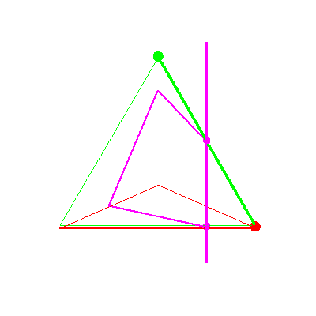
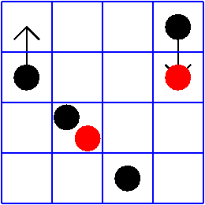

The line lying in a fixed plane in P3


The line lying in a fixed plane in P3 |
|
|  |
In the fourth stage of the specialization sequence, the point moves along the line, and again nothing happens to the solution line. This is a case of (no,no) in Table 2/Figure 8 of GLR. |
|  |